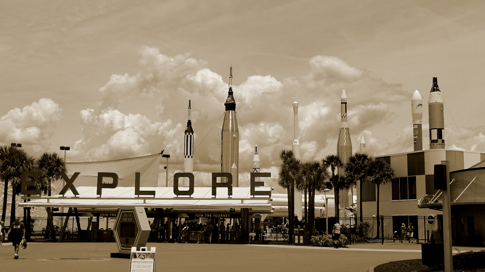
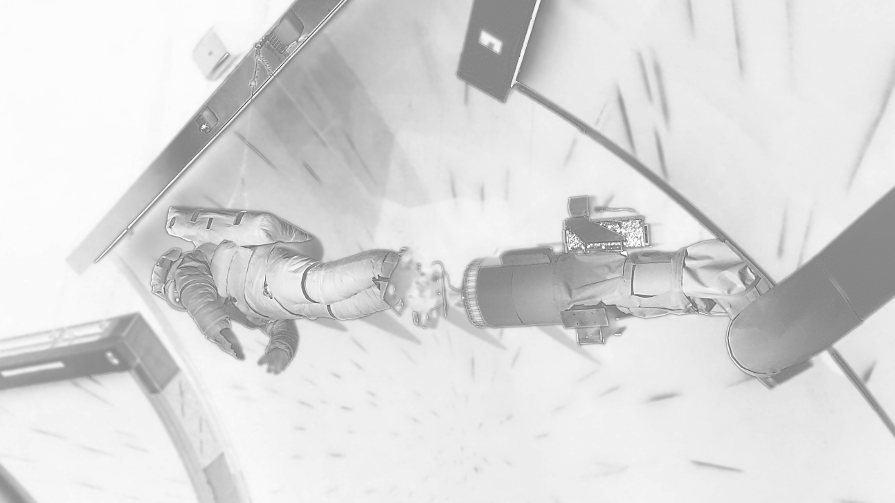
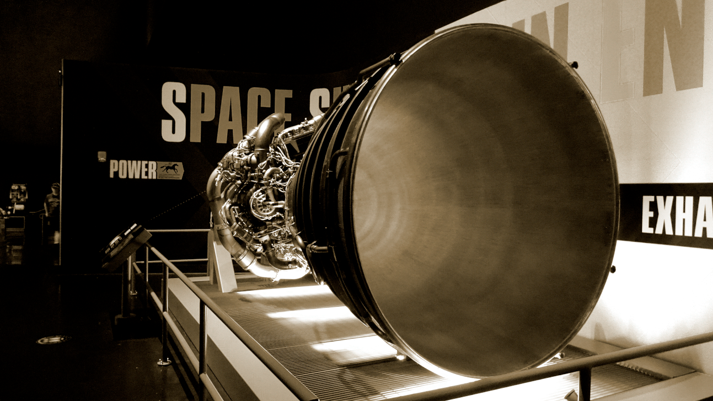

Carrera por el espacio

Las pruebas que se realizaban eran lanzamientos de satélites artificiales, seres humanos y que terminó con el envío de un humano a la superficie de la Luna.
La Nasa con el expresidente John F Kennedy, en respuesta en respuesta a la pérdida de prestigio nacional y a los temores de seguridad causados por los líderes iniciales en la exploración espacial de la Unión Soviética, propuso el ambicioso objetivo de poner a un hombre en la Luna. Con el Programa Apolo en donde Neil Armstrong fue la primera persona en poner un pie en la Luna.

La Nasa o Administración Nacional de Aeronáutica y el Espacio es la agencia del gobierno de Estados Unidos de América responsable del programa espacial civil, como también de la investigación aeronáutica y aeroespacial.
La Nasa fue fundada en 1958 por el presidente Dwight Eisenhower para expandir la comprensión científica de la Tierra y el universo, crear nuevas tecnologías espaciales y avanzar en la investigación aeronáutica.
La Nasa a realizado varias misiones al espacio tanto tripuladas como no tripuladas, dentro de las misiones tripuladas se encuentran:
- Avión cohete X-15 (1959–68)
- Programa Mercury (1959-1963)
- Programa Gemini (1961-66)
- Programa Apolo (1961-72)
- Skylab (1965-79)
- Proyecto de pruebas Apolo-Soyuz (1972-75)
- Programa del transbordador espacial (1972-2011)
- Estación Espacial Internacional (1993-presente)
